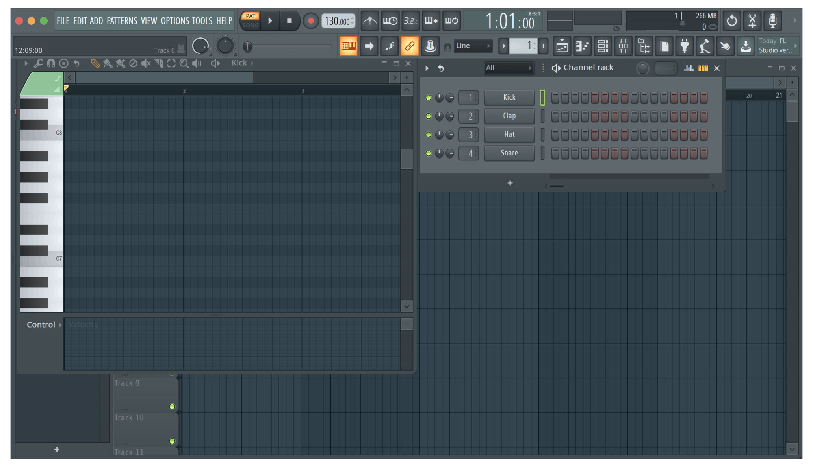
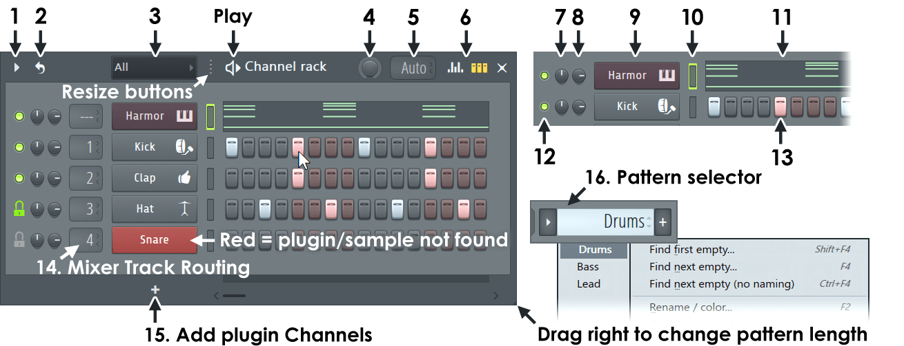
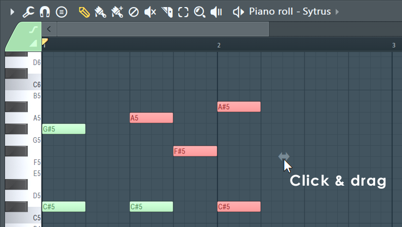

FL Studio is a "DAW" or "Digital Audio Workstation". It is very user friendly yet powerful. There is a lot that you can learn and do with this program, and I will share a few tips with you to help get you started!
The channel rack is a very important tool to understand when first starting off. With this you are able to add in VST's (virtual studio tools) and create rythmic paterns for them. I find that this is best used for drums and percussion, but can be used for any other sound you are wanting to use!
The piano roll is a very powerful tool. With this you can take anything that you have loaded into the channel rack and drag and drop notes onto a virtual piano. Here you can create chords, melodies, arpegiate and change velocity as well as many other things!
